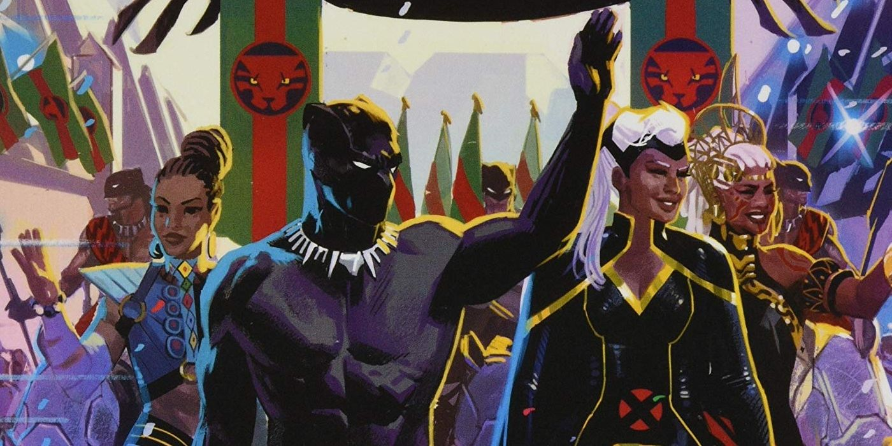

HISTORIA
La historia Wakandiana se remonta a cientos de años atrás, es una
civilización tan antigua como China, Grecia y Egipto, sus primeros registros se remontan a 10.000 a.C, cuenta la historia de un meteorito que golpeó el actual territorio de Wakanda, este meteorito estaba formado por un material que no existe en el planeta, 5 tribus se reunieron y alrededor de este meteorito fundaron Wakanda, y aquel metal extraño que surgió del meteorito lo llamarón "Vibranium", tenía propiedades únicas y fue considerado un regalo de los dioses.
Entonces, en esa epoca apareció el primer Pantera Negra, "Bashenga", quien rezó a la diosa Bast para que le ayudase a combatir las disidencias entre las tribus a causa del preciado mineral. Fue entonces cuando Bast le dio a Bashenga las fuerzas y vigor a través de una planta especial llamada "Planta Corazón" que le permitieron tener Fuerza, Velocidad y habilidades sobrehumanas que le convirtieron en el primer Rey, Pantera Negra y el protector de Wakanda.

Desde entonces, los Wakandianos usaron el Vibranium para desarrollar todo tipo de desarrollos tecnológicos y se convirtieron en la mayor potencia mundial, pero decidieron aislarse al mundo y ocultar el Vibranium para evitar que otra nación pudiera darle mal uso a este preciado material.
Su linaje gobernaría al país durante siglos, y en cada generación el manto de "Pantera Negra" sería heredado en la familia real, y la imagen de la Pantera Negra sería enaltecida como el único hombre capaz de mantener unida su nación y protegerla de cualquier amenaza
Dioses
Algunos de sus dioses son representaciones de animales de su región, como pueden ser los gorilas, las panteras, entre otros. EL conjunto de todos los dioses wakandianos se conoce como "los Orisha" y aquí podemos encontrar:
- Bast, La diosa Pantera, creadora del manto de la "Pantera Negra"
- Kokou, El dios de la guerra
- Mujaji, el dios del hambre
- Thoth, El dios de la luz y la razón
- Ptah, El dios de los metales y aleaciones
Si quieren saber más sobre la historia de Wakanda, pueden acceder al siguiente enlace
HISTORIA DE WAKANDA